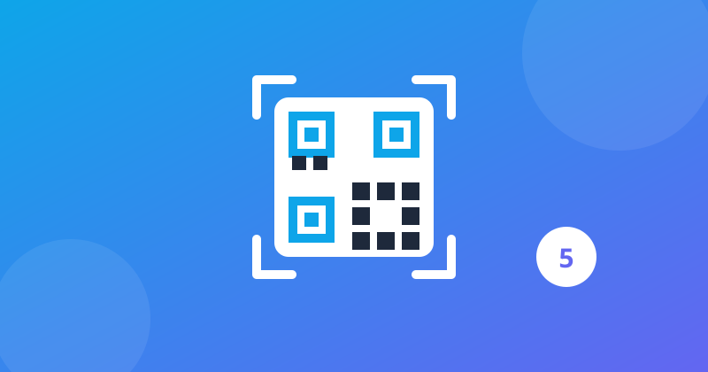

5 Best Free QR Code Scanner Apps for Android (2026)

QR codes are everywhere now — restaurant menus, payment apps, Wi-Fi passwords, event tickets. A good scanner should do one thing well: point, scan, open. The problem is that the Play Store is full of "free" QR scanners stuffed with ads, trackers and permissions a scanner has no business asking for. We tested the most popular free QR code scanner apps on a mid-range Android phone for one question: which one scans fast and safely, without selling your data or showing a full-screen ad after every scan?
What we tested
- Scan speed — how quickly each app locks onto a QR code in normal and low light
- Ads & interruptions — whether ads appear between scans or after opening a link
- Permissions & privacy — what the app asks for beyond the camera
- Useful extras — scan history, creating your own QR codes, Wi-Fi connect, flashlight
1. Google Lens — best for most people
Google Lens is already on most Android phones, and its QR scanning is fast and reliable: point the camera, and the link, Wi-Fi login or contact card opens in a tap. It also translates text, identifies objects and copies printed text, so it earns its place on your phone beyond QR codes. It needs an internet connection for some features, and it is a Google app, so it is not the pick if you want to avoid Google services entirely — but for most people, this is the scanner to use, and you may not need to install anything at all.
2. QR & Barcode Scanner by Gamma Play — best dedicated scanner
Gamma Play's scanner is the most popular dedicated QR app on the Play Store, and it earns it: instant scanning, a built-in flashlight for dark rooms, scan history, and the ability to create your own QR codes for Wi-Fi, contacts and links. The free version shows ads, and it asks for more permissions than a bare-bones scanner needs — check the permission list before installing. If you scan codes every day and want a dedicated tool with history and code creation, this is the one.
3. QR Code Reader by TeaCapps — best simple scanner
TeaCapps' QR Code Reader does almost nothing except scan — and that is the point. It opens fast, scans instantly, keeps a history of your scans, and can create QR codes. There is no account, no setup, and no clutter. The free version is ad-supported, but the ads stay out of the way while scanning. Best if you want a scanner that behaves like a tool, not a billboard.
4. Binary Eye — best open-source, ad-free scanner
Binary Eye is completely free, ad-free and open source, with no trackers and no unnecessary permissions — it asks for the camera and nothing else. It scans QR codes and a wide range of barcodes, reads inverted codes, and can generate barcodes of its own. The interface is plain and practical rather than pretty, and it will not hold your hand with tutorials. If you care about privacy and hate ads, this is the most honest scanner on this list.
5. Your phone's built-in camera — best if you already have one
Before installing anything, try the camera app already on your phone: most modern Android phones (Pixel, Samsung and many others) scan QR codes directly in the stock camera — just point and tap the pop-up. No download, no ads, no extra permissions. If your camera does it, you do not need a scanner app at all. Only install one of the apps above if your camera does not scan codes, or you need history and code creation.
Quick comparison
| App | Ads | Creates QR codes | Best for |
|---|---|---|---|
| Google Lens | None | No | Most people, already installed |
| Gamma Play Scanner | Yes | Yes | Daily scanning + history |
| TeaCapps QR Reader | Yes | Yes | Simple, fast scanning |
| Binary Eye | None | Yes | Privacy, ad-free, open source |
| Built-in camera | None | No | No install needed |
Note: prices and free-tier features change often — always check the Play Store listing before installing. We never link to cracked or modded apps. One safety habit matters more than the app you pick: never scan a QR code that promises a prize or a payment and then asks for your password or bank details — real QR codes never ask for that.